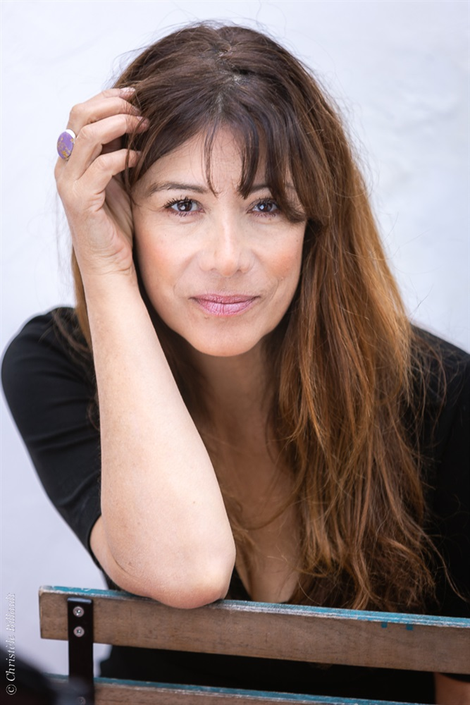
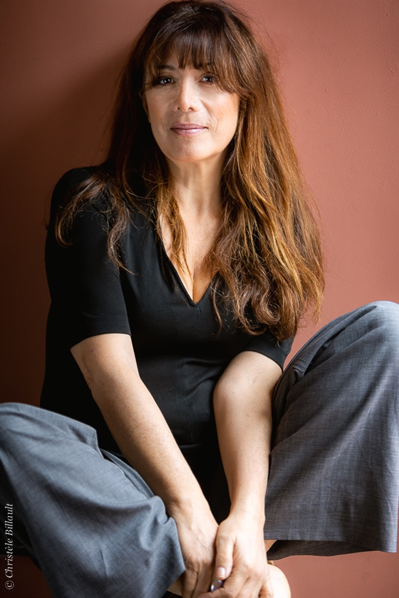
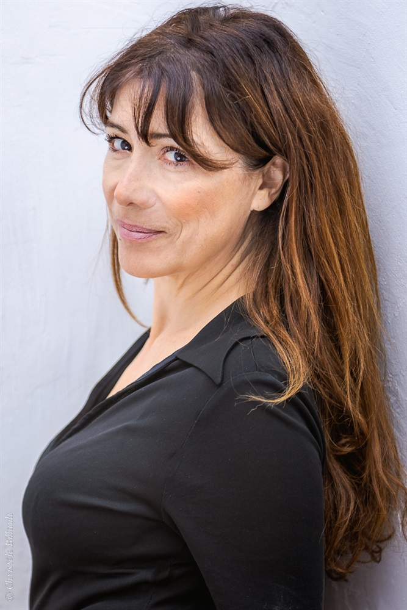
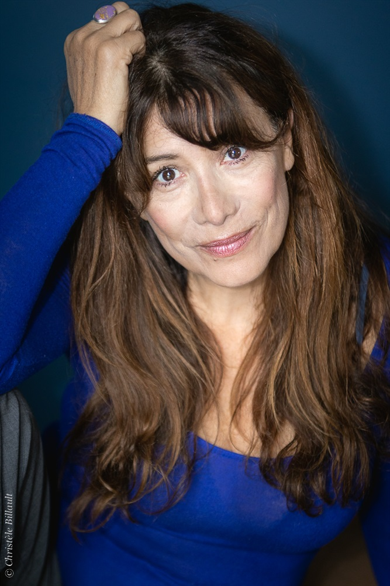
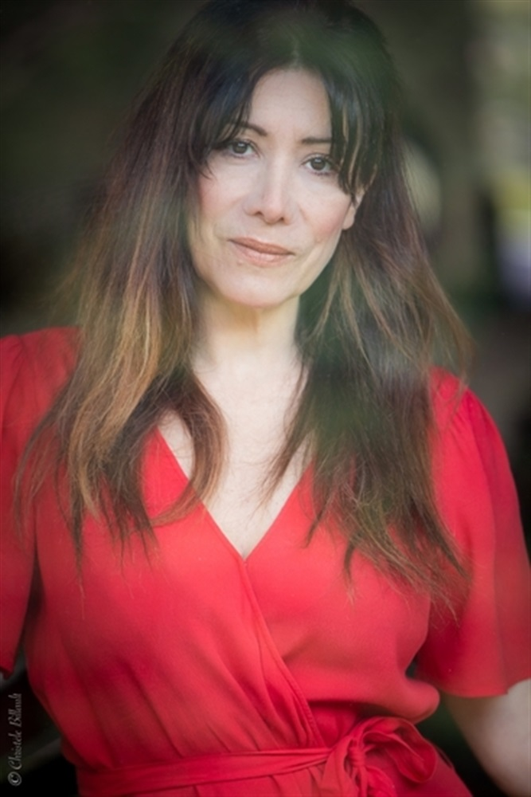

Flor Lurienne
Comédienne · Autrice · Metteuse en scène
Compagnie Presque Une Île
2025 – 2026
Le Lave-Vaisselle
Flor Lurienne & Frédéric de Goldfiem
Rôle principal
Théâtre La Flèche, Paris
2016 – 2017
Ça va maman ?
Gloria Mina · Armand Eloi
Festival d'Avignon
2013 – 2016
Deshabillez Mots Opus 2
Flor Lurienne & Léonore Chaix · Marina Tomé
Théâtre de l'Européen
2011 – 2013
Deshabillez Mots Opus 1
Flor Lurienne & Léonore Chaix · Marina Tomé
Théâtre de l'Européen / Studio des Champs-Élysées
2009 – 2011
Déshabillez Mots (Work in progress)
Flor Lurienne & Léonore Chaix · Jacques Bonnaffé
Trois Baudets — Festival du Mot / Aide fonds SACD Humour
2023
Mon cul s'en accomode
Écriture collective · Frédéric de Goldfiem
Nice
2020
Nuit Blanche
Dostoïevski · Joel Jouanneau
Port Louis
2019
Conviction Intime
Rémi De Vos · Gilles Nicolas
Paris
2008
George Dandin
Molière · Marcel Maréchal
Tréteaux de France
2006
Les Paradis Aveugles
Duong Thu Huong · Gilles Dao
Tarmac de la Vilette
2005
L'Impossible Retour
Jean-Lambert Wild · Flor Lurienne
Atelier du Plateau
La Sève
Flor Lurienne
Atelier du Plateau
2004
Mur Mûrs 2
Matthieu Malgrange · Gilles Zaepffel
Atelier du Plateau
Les Soirées Polars
Gilles Zaepffel
Atelier du Plateau
2003
Les Épiphanies
Henri Pichette · Estelle Cukier
Maison de la poésie
2000
Bonjour et au revoir Monsieur Brecht
Kazem Sharyarhi
Théâtre Jean Vilar
1999
L'Homme de moins
Matthieu Mével
Théâtre des Amandiers Nanterre
1998
La Parenthèse du Mimosa
Grégoire Aubert · François Delaive
Festival Off d'Avignon
1997
La Porte de l'Initiation
Rudolf Steiner · Valery Rybakov
Sudden Théâtre
1996
Renaud et Armide
Jean Cocteau · Sébastien Azzopardi
Théâtre du Gymnase
2016
Cherchez la Femme
Sou Abadi
2014
Hôtel du Paradis
Claude Berne
2013
So Long
Bruno Mercier
2012
L'Autre Vie de Richard Kemp
Germinal Alvarez
2004
Gabriel
Patrice Chéreau
1999
Vatel
Roland Joffé
2022
HPI (Saison 2)
TF1
2016
Léo Mattei
Ludovic Colbeau-Justin
2014
Psy
Jean Achache
Les Fines Fleurs
Michel Muller
2013
Section de Recherches
Franck Buchter
2006
État de Grâce
Pascal Chaumeil
2000
Crimes en Série
1996
Sapho
Serge Moati
2026
Le Lave-Vaisselle
Éditions de l'Avant-Scène Théâtre, avec Frédéric de Goldfiem
2022
Rita trace sa route
Éditions Velvet
Presse : Paris Match · Livres Hebdo · L'Obs · Télé 7 jours
Déshabillez-Mots (théâtre)
L'Avant-Scène Théâtre
avantscenetheatre.com/comedie/1019-deshabillez-mots-nouvelle-collection-9782749814087.htmlFormation continue Louis Lumière
Cours d'Art Dramatique René Simon
Stages — Anne Petit · Pierre Pradinas · Xavier Durringer · Valéry Rybakov · Nicolas Karpov (Gitis) · Muriel Mayette · Jean-Yves Ruf · Benoît Theberge · Camilla Saraceni · Gilles Nicolas · Pascal Rambert





Retrouvez les émissions et interventions de Flor Lurienne sur Radio France
Écouter sur Radio France